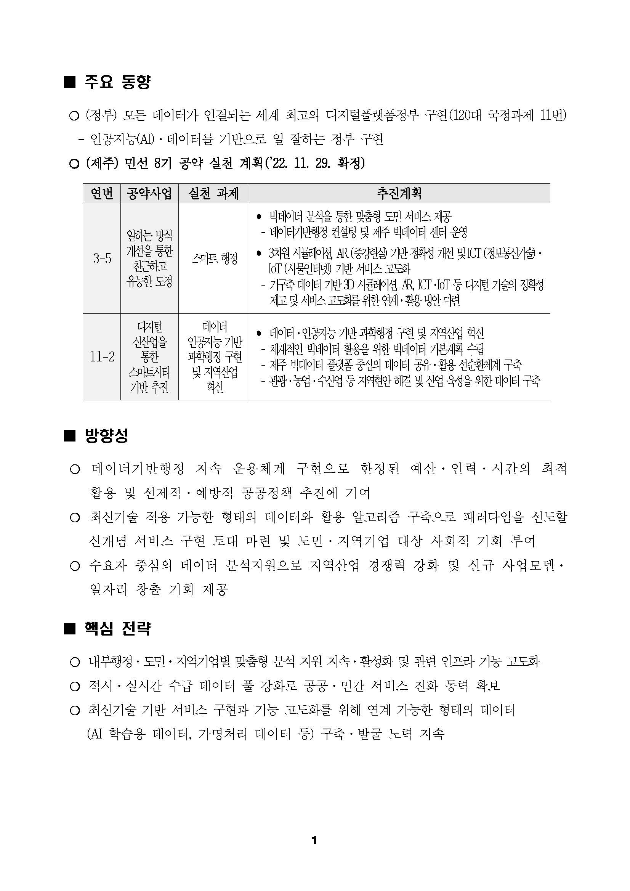
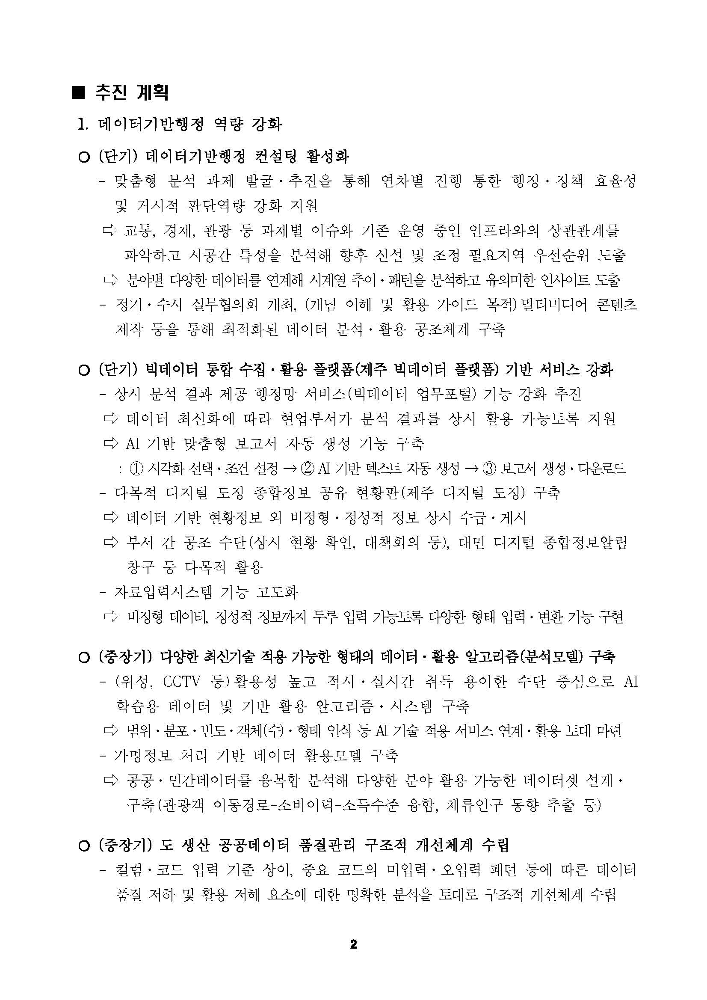
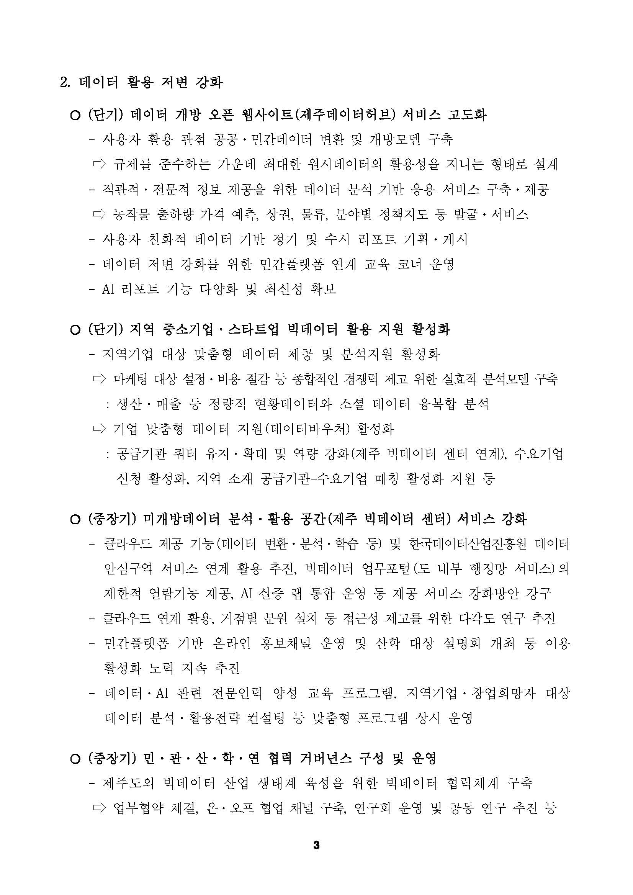

메뉴 바로가기
본문 바로가기
푸터 바로가기
메뉴
디지털 도정
제주특별자치도
데이터현황정보
교통
소비
산업
관광
환경
재해재난
1차산업
에너지
인구
고용동향
재정현황
세입/세출예산
재정집행
재정지표
홈페이지 민원현황
시민의견현황
시점/지역별 민원
언론/미디어
보도자료
언론뉴스
도정소식
주요일정
포토존
핵심정책/공약
공약이행
언론으로 보는 공약
한눈에 보는 공약
이전
홈
다음
인구통계 대시보드
인구통계 대시보드
인구통계 대시보드
인구통계 대시보드
인구통계 대시보드
asdf
창닫기


